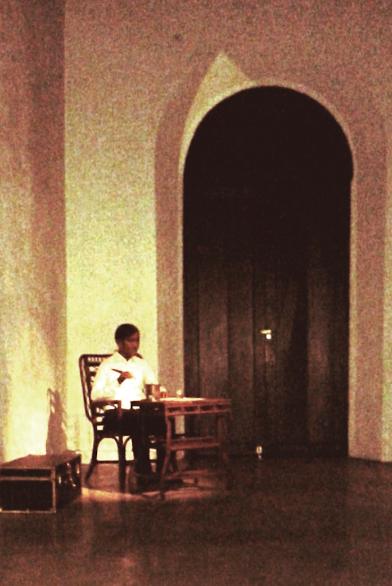

Rizal was tried by a military court on December 26, 1896, after being accused of rebellion, sedition, and illegal association. Spanish authorities connected him to the Philippine Revolution through his writings, his reform activities, and his alleged influence on Filipino organizations (National Historical Commission of the Philippines [NHCP], 2000; NHCP, 2022).
